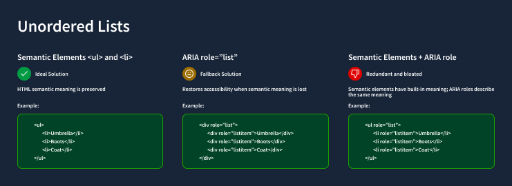

Scaling Accessibility Practices Across a Lean Product Program
I drew on my background as a certified Trusted Tester to build cross-team accessibility knowledge from the ground up—running hands-on workshops, piloting dev-mode annotation workflows, and contributing to shared component documentation to reduce repeated failures and foster a culture of proactive accessibility.
Images shown are illustrative representations of my design process and do not include actual product screenshots or wireframes due to confidentiality.
Role:
Accessibility Expert & Product Designer
Team:
Cross-functional program with 10 Lean product teams
Tools:
ANDI, Figma Dev Mode, Github Pages, screen readers
Skills:
Section 508 / WCAG Compliance, strategic thinking, accessibility testing, workshop facilitation, cross-team enablement
Timeline:
2025 - 2026
Challenge
Our program consisted of 12 Lean product teams, each with a dedicated product designer, PM, and development team working on a single application within a larger suite of case management tools. While the structure kept teams nimble and focused, it created a critical gap in shared knowledge: accessibility.
The suite was regularly subjected to Section 508 compliance audits, and it was regularly failing. The problem wasn't that teams were careless—it was that accessibility experience varied enormously from team to team, and there were no centralized or shared guidelines. When an audit surfaced issues, a team would triage and patch them in isolation, but that knowledge stayed siloed. The same mistakes surfaced again and again across different applications and audit cycles.
Making the challenge more visible was the performance of our sister organization, Org B, which shared the same Section 508 audit framework and had a markedly better compliance track record than our organization, Org A. Understanding why meant looking at how they were structured—and what we'd have to do differently to get there.
![Flowchart explaining the Accessibility process for Org A and Org B. On Org A, one designer per lean product team hands off a new design to developers. The developers implement the design, and the product is released. Then, there is an accessibility audit. The proudct teams address 508 violations, and the accessibility audit is repeated until the products pass accessibility review. At Org B, ten designers on a centralized design team hand off a new designs to the accessibility audit. The designers address 508 violations, and the accessibility audit is repeated until the designs pass accessibility review. Then the design is handed off to developers, who implement the design. The developers hand off for another accessibility audit. The developers address 508 violations, and the accessibility audit is repeated until the product passes accessibility review. Then the product is released.](Images/scaling-accessibility/audit-process-flowchart.png)
Insight
Before joining this program, I had worked as a Trusted Tester at Org B, which operated on a fundamentally different model. There, designers worked on a centralized, internal agency team—ten designers who were tapped by individual PMs and developers across projects as needed. In that structure, I had served as the dedicated accessibility reviewer for all ten designers' work.
I completed 50+ hours of accessibility training and passed a formal exam to become a certified Trusted Tester—a role that gave me the expertise and authority to evaluate designs and interfaces against the same standards that official auditors use. In a centralized model, that depth of specialization made sense: I could dedicate significant time and attention to accessibility review because it was a defined part of my role.
But that model wasn't transferable. Our 12-team program was structured to keep individual teams lean and responsive. There was no central design pool to consolidate review through—and creating one would undermine the agility the structure was designed to protect. Essentially, the challenge wasn't knowledge, but distribution of knowledge.
Key findings
Highly variable baseline knowledge across teams:
Some designers had prior experience with WCAG or accessibility testing tools; others had none. Without a shared starting point, each team developed its own interpretation of compliance requirements—leading to inconsistent implementations across the application suite.
Reactive compliance culture:
Accessibility was treated as a remediation task triggered by audit failures, not a design and development consideration from the start. Teams had no structured way to evaluate accessibility during sprints before the auditor did.
Siloed knowledge:
When a team fixed an audit finding, that solution stayed with that team. There was no mechanism to broadcast what had been learned to the other 11 teams who might face the same issue in the next cycle.
Handoff gaps between design and development:
Designers who did think carefully about accessibility came up with individual, non-standard ways to communicate ARIA labels, focus behavior, or role assignments to developers, using a hodge-podge of Teams messages, Jira comments, and Figma comments.
Design system coverage was surface-level:
The existing shared library addressed color contrast and basic visual compliance, but did not document interaction behavior, keyboard navigation, live region handling, or the ARIA attributes required for correct screen reader behavior.
Approach
Rather than trying to replicate the centralized reviewer model that worked at the sister organization, I designed a program to build distributed expertise across all 12 teams—equipping individual designers and developers with the knowledge, tools, and documentation to test and design accessibly from the start of every sprint, not just when an audit was looming.

and- and
- . The list reads umbrella, boots, and coat. ARIA role=list is a fallback solution. Restores accessibility when semantic meaning is lost. An example code snippet shows a three-item list formatted using
and ARIA roles. The list reads umbrella, boots, and coat.Semantic elements plus ARIA roles are redundant and bloated. Semantic elements have built-in meaning; ARIA roles describe the same meaning. An example code snippet shows a three-item list formatted using semantic elements - and
- and ARIA roles. The list reads umbrella, boots, and coat." data-aos="fade-up" data-aos-once="true">
Accessibility workshops
I led a series of hands-on workshops for designers across the program, using the same evaluation tools that Section 508 auditors use in the field. While the existing component library already covered fundamentals like color contrast, the workshops went significantly deeper:
- Page hierarchy and heading structure: How to build logical reading and navigation order for screen reader users
- Programmatic labels: Associating form fields, inputs, and interactive elements with meaningful labels that assistive technologies can parse
- ARIA labels and landmark roles: When and how to apply ARIA attributes correctly, and when to rely on native HTML semantics instead
- Dynamic content: Managing live regions, status messages, and state changes so they're announced appropriately by screen readers
Each session was practical and tool-forward—participants tested live pages using ANDI and Mac VoiceOver, identified real issues in their own applications, and left with a concrete checklist they could apply immediately in their next design review.
- and ARIA roles. The list reads umbrella, boots, and coat." data-aos="fade-up" data-aos-once="true">
Figma Dev Mode accessibility pilot
A persistent gap between design and development was that accessibility intent rarely survived the handoff. Designers might understand the required ARIA label for a component, but without a structured way to communicate that to developers, it often got lost or misinterpreted in implementation—contributing to the inconsistent implementations and audit failures we'd seen across teams.
I led a pilot program using Figma Dev Mode to close that gap. By embedding accessibility annotations—including ARIA attributes, component states, and semantic expectations—directly into code snippets within the design file, developers received clear, actionable specifications alongside visual designs rather than in a separate document that might be overlooked.
The pilot improved clarity and alignment between design and development. But it also surfaced a critical limitation: Dev Mode could communicate accessibility intent, but it had no way to validate accessibility in real, functional components. Our audits evaluate live behaviors—keyboard interaction, focus management, screen reader support—governed by Section 508. A design specification, however detailed, cannot stand in for a tested, working implementation.
![Example of how accessible implementation was debated for a component in the Storybook. An example pattern is a set of two inputs connected by text elements. Text element 'Add' plus a number input plus text element 'time slot(s) at' plus a time input plus text element 'EST.' An aria-labelledby chain is technically more compliant. the accessible name matches the visible text perfectly, but the screen reader output is repetitive. The chain is also fragile. An example HTML code snippet shows span IDs for each text element, and separate inputs with aria-labelledby roles definted. The screen reader output for the example when the counter is focused: 'Add time slot(s) at EST, number field'. The screen reader output when the picker is focused: 'add time slot(s) at EST, time field'. Using aria-labels is simpler and easier to maintain, but the accessible name does not match the visible text. Technically fails WCAG standards. An example HTML code snippet shows span IDs for each text element, and separate inputs with aria-labels roles definted. The screen reader output for the example when the counter is focused: 'Number of time slots, number field'. The screen reader output when the picker is focused: 'Time of time slots, EST, time field'.](Images/scaling-accessibility/multipart-label-pattern.png)
Storybook component library
The Dev Mode pilot pointed us toward where the real leverage was: accessible, reusable components built and validated in code. We shifted our strategy and invested in building a centralized component library in Storybook—a move that required careful stakeholder management before it could begin.
Many developers were initially reluctant to invest in what looked like documentation overhead, especially across multiple frontend frameworks. To address this, we reframed Storybook not as a documentation exercise but as a scalable mechanism for improving compliance and eliminating repeated audit findings. By demonstrating how shared, accessible components could prevent defects upstream and reduce duplicated effort across 12 teams, we were able to secure buy-in.
We scoped the initial investment deliberately: a focused pilot covering five high-frequency components—buttons, cards, dropdowns, and input fields. For each, we paired design documentation with production-ready code examples in both React and Ruby on Rails, ensuring that accessibility requirements were consistent regardless of which team was implementing or which framework they were working in.
By anchoring accessibility in reusable, testable components—rather than one-off fixes or design-only annotations—we established a more sustainable foundation for improving audit performance and scaling consistent practices across all 12 product teams.
Impact
This work addressed accessibility at the structural level—not just the symptom of repeated audit failures, but the underlying conditions that made those failures inevitable. By distributing knowledge and embedding accessibility into the tools and workflows teams already use, the program reduced the dependency on post-audit remediation and built the foundation for proactive, sustained compliance.
Key Achievements
01.
Delivered accessibility workshops that introduced 12 product teams to auditor-grade testing tools and techniques—building a consistent, shared baseline of accessibility knowledge across the program for the first time
02.
Piloted a scalable design-to-dev handoff model using Figma Dev Mode to embed ARIA labels and accessibility annotations directly in code snippets, reducing handoff gaps that had contributed to repeated implementation failures
03.
Contributed lasting documentation to shared Storybook component libraries in both Ruby and React, giving all teams persistent, implementation-ready accessibility guidance for every shared component
04.
Shifted the program's accessibility culture from reactive remediation toward proactive design practice, enabling teams to catch and address issues within their own sprint cycle rather than waiting for external audit cycles to surface them
This project demonstrated my ability to adapt specialized expertise to an organizational context where direct application wasn't possible, design scalable knowledge-transfer programs, and create durable artifacts that outlast any single initiative.

Looking for more product design?
Continue reading about the Enterprise Training & Enablement Initiative I led to build a new LMS from the ground up.